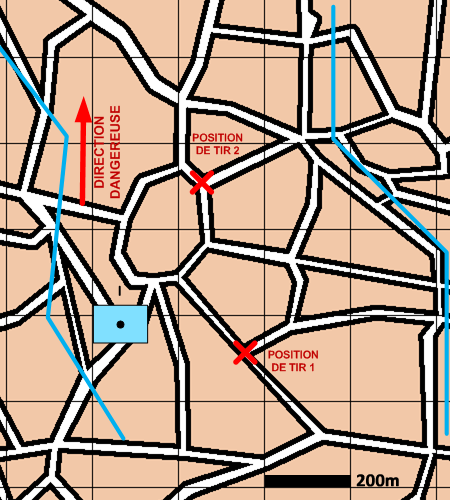

NIVEAU :Automate
ARME :ASS
MISSION :Se Deployer
Objectif principal
- Se déployer
Modalités d'exécution
-
Le dispositif se déplace jusqu'aux positions ou zones de déploiement (ou sur place si aucune position n'est donnée) ;
-
Après chaque tir, le pion se sauvegarde automatiquement sur une autre position et s'installe (si plusieurs positions ont été renseignées par l'utilisateur).
-
La section de tir, une fois déployée, à accès à l'ordre de conduite "Sauvegarde Contre Batterie" afin de se sauvegarder manuellement sur une position.
Schéma de modélisation

Paramètres obligatoires
Fuseau : Limite gauche / Limite droite : Zone de responsabilité.
Direction Dangereuse : Orientation privilégiée des capteurs lors de bond ou de reconnaissance de points.
Paramètres optionnels
Lignes de début et fin de mission [LDM/LFM]
Positions ou zones de deploiement
Position de sauvegarde